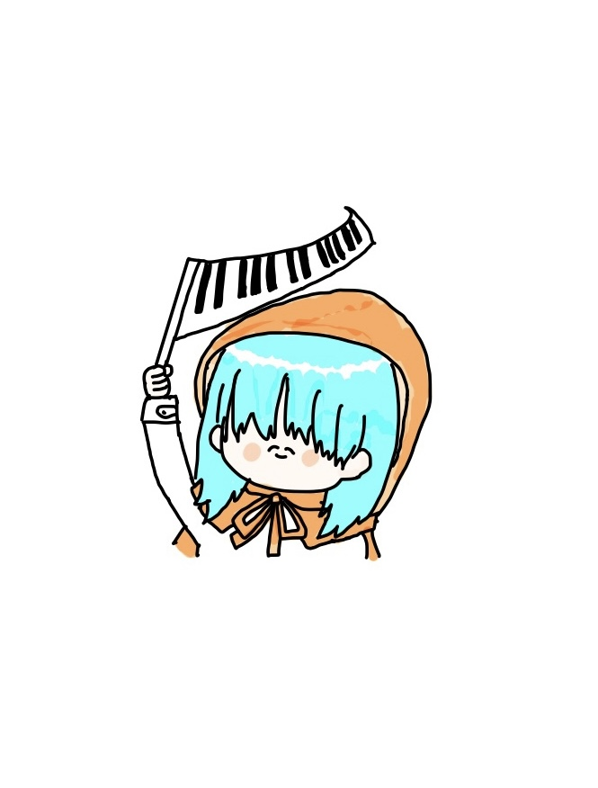

HARU
FUJIHARA
About
information
SNS
About
ふ じ は ら は る
藤原 春
早稲田大学 政治経済学部国際政治経済学科に所属。
早稲田実業学校高等部に入学し、高校では合唱部と軽音、弦楽部にて 音楽三昧の日々を送る。
現在もwebチームとして活動するほか、バンドサークルにて オリジナルバンド（Ba担当）を組むほか、ジャズサークルでは ピアノを担当している。サボりまくっているがピアノのYoutubeチャンネルも一応やっている。
音楽と食べることが生きがい。美味しいものは世界を救う。 甘いものとエスニックが好き。
Music
ひぐらし
Ba.担当
2024年10月結成
高校の時チェロちょっとだけやってたけど ベースは大学からの初心者です。。
Pentas
Key.担当
高2の6月結成。
キーボード担当。 楽しすぎた！！！

YouTube
チャンネル
サボりまくってて最近全然投稿してない けど見てくれたらとっても嬉しいです。 何かおすすめの曲とかあったらぜひ 教えてください！
伴奏データ
作ります
既存曲、オリジナル曲問わず
ピアノの伴奏お作りできます！
ご依頼の際は上のリンクから よろしくお願いいたします
高校合唱部
RADWIMPSと共演
Mステのバックコーラス
Jリーグイベントバックコーラス
MV「正解」ピアノ
（手が3秒くらい出演笑）
Favorite
Artist
ヨルシカ
藤井風
Childspot
TOMOO
ずっと真夜中でいいのに。
おいしくるメロンパン
Penthouse
Charlie Puth
@HaruFujihara